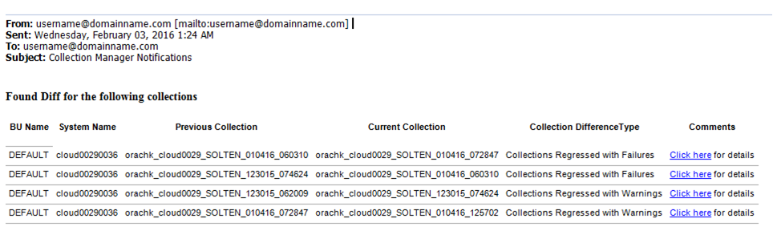
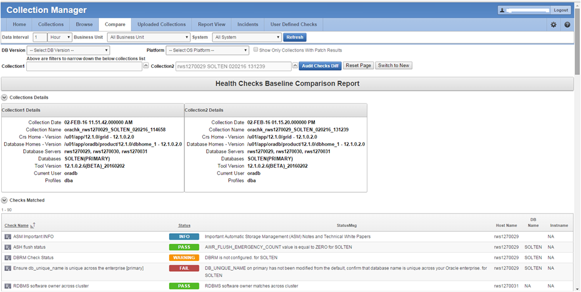

2.3.3 Configuring Email Notification System
Oracle Health Check Collections Manager provides an email notification system that users can subscribe to.
-
Configuring the email server, port, and the frequency of email notifications.
-
Registering the email address
Note:
Only the users who are assigned Admin role can manage Email Notification Server and Job details.
To configure the email notification system:
Note:
Manage Notifications section under the Administration menu is available for all users irrespective of the role.
If the ACL system is enabled, then the registered users receive notifications for the systems that they have access to. If the ACL system is not configured, then all the registered users receive all notifications.
Depending on the selections, you made under Collection Notifications section, you receive an email with Subject: Collection Manager Notifications containing application URL with results.
Figure 2-5 Oracle Health Check Collections Manager - Sample Email Notification
Description of "Figure 2-5 Oracle Health Check Collections Manager - Sample Email Notification"
Under Comments column, click the Click here links for details. Click the respective URLs, authenticate, and then view respective comparison report.
Figure 2-6 Oracle Health Check Collections Manager - Sample Diff Report
Description of "Figure 2-6 Oracle Health Check Collections Manager - Sample Diff Report"